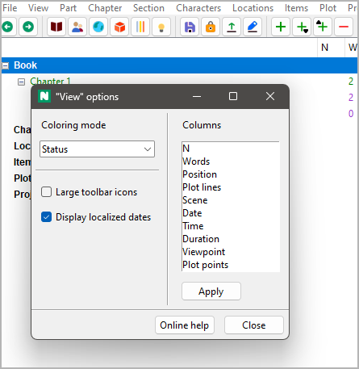

View menu
Control the display
Chapter level
Hide the sections
With View > Chapter level or Ctrl-Alt-C,
you can collapse the tree, so that only parts and chapters are visible.
Expand selected
Show a whole branch
With View > Expand selected, you can expand a selected tree element.
Collapse selected
Hide child elements
With View > Collapse selected, you can collapse a selected branch.
Expand all
Show the whole tree
With View > Expand all, you can expand the whole tree.
Collapse all
Hide child elements
With View > Collapse all, you can hide all tree elements except the main categories.
Show Book
Go to the “Book” branch and expand it
With View > View Book, you can select and open the “Book” branch.
Show Characters
Go to the “Characters” branch and expand it
With View > View Characters, you can select and open the “Characters” branch.
Show Locations
Go to the “Locations” branch and expand it
With View > View Locations, you can select and open the “Locations” branch.
Show Items
Go to the “Items” branch and expand it
With View > View Items, you can select and open the “Items” branch.
Show Plot lines
Go to the “Plot lines” branch and expand it
With View > Show Plot lines, you can select and open the “Plot lines” branch.
Show Project notes
Go to the “Project notes” branch and expand it
With View > View Planning, you can select and open the “Project notes” branch.
Toggle Text viewer
Show/hide the novel text
With View > Toggle Text viewer or Ctrl-T,
you can open or close the text viewer window,
showing part/chapter/section titles and section content.
Hint
On reopening, the windows shows the text, where the tree is selected.
Toggle Properties
Show/hide the selected element’s properties
With View > Toggle Properties or Ctrl-Alt-T,
you can open or close the element properties window.
Hint
On reopening, the window shows the properties of the currently selected element.
Detach/Dock Properties
Show the selected element’s properties either in the main window or in its own window
With View > Detach/Dock Properties or Ctrl-Alt-D,
you can detach or dock the element properties window .
Hint
On closing the detached window, the properties are docked again.
Options
Project independent program settings
With View > Options, you can open a dialog for settings concerning the display.
Coloring mode
Set criteria according to which normal sections are colored in the tree
- None
Normal sections are black on white by default.
- Status
Normal sections are colored according to their completion status (Outline, Draft, 1st Edit, 2nd Edit, or Done).
- Work phase
Normal sections are highlighted if their completion status does not match the work phase defined in the Book properties.
Large icons
By default, the icon size is 16x16 pixels. If the Large icons checkbox is ticked, 24x24 icons are used after the next program startup.
Display localized dates
If ticked, localized dates are displayed.
If unticked, dates are displayed like YYYY-MM-DD, according to ISO 8601.
Columns
Change the column order
From top to bottom in the list means from left to right in the tree.
Just drag and drop to change the order.
Click the Apply button to apply changes.